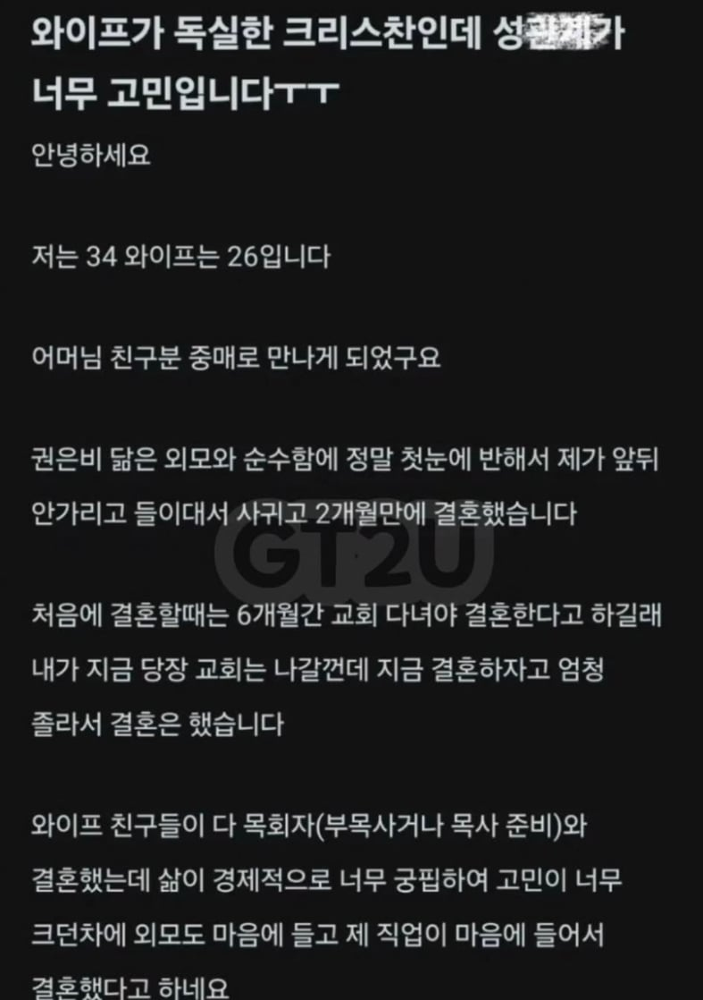
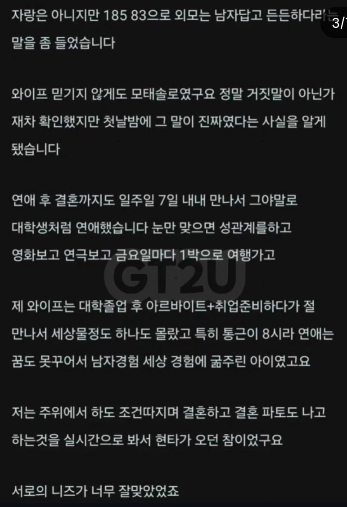
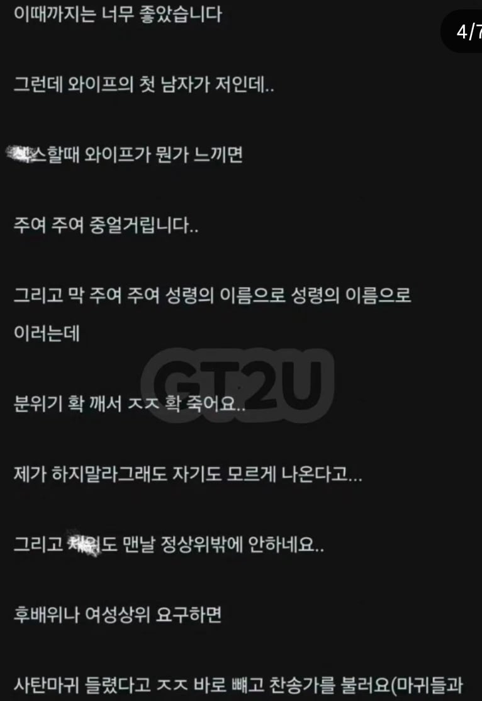
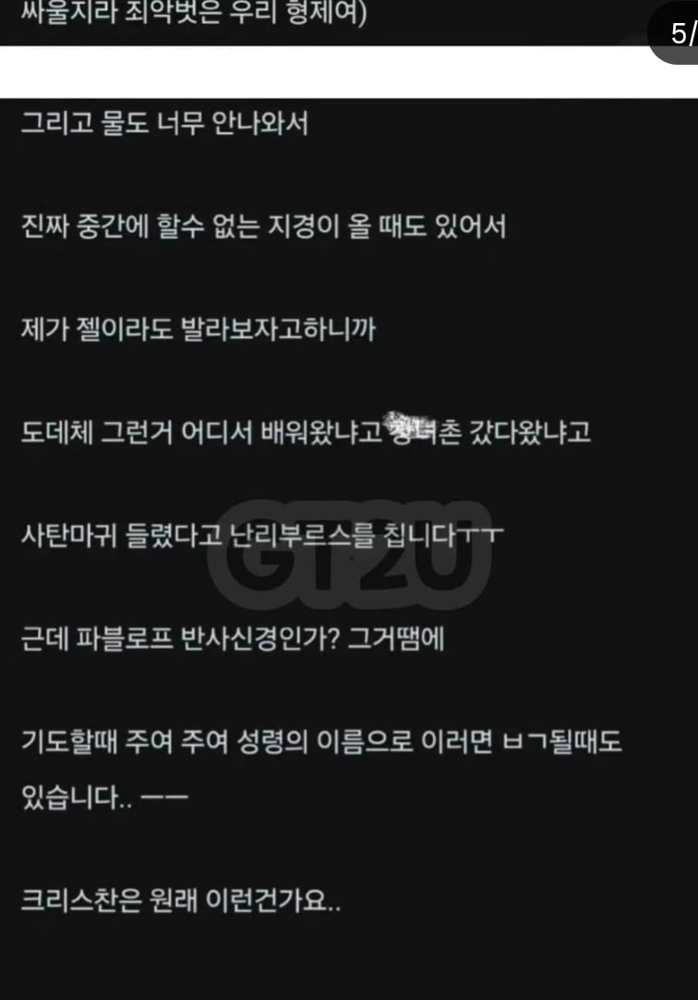

교회 다니는 여자를 걸러야 하는 이유..




교회 다니는 여자를 걸러야 하는 이유..
나라면 각종 성서 구절을 찾아서 바로 보여준다. 독실한 크리스찬이라면 성서를 기반으로 살아야지 하면서 하는거지. 유대교에서는 그래서 겁나 애도 많이 낮고 하는데 말이야.
잠언 5장 18~19절 개쩌네. “젊어서 취한 아내를 즐거워하라”, “그의 품을 항상 족하게 여기며 그의 사랑을 항상 연모하라” 이런구절 바로 보여주면되지 뭘 블라인드까지 올린데
아멘....발딱...
교회가면 못일어나겠누 ㅋㅋㅋㅋㅋㅋ웃겼다 ㅋㅋㅋㅋㅋ
이건 소설 티가 너무 나서 오히려 진짜인가 싶네 ㅋㅋㅋ
나도 평생 교회다니는데 믿음은 없고 효도하느라 일요일만 가는데 그것도 교대라 한달에 1,2번정도 감 교대전엔 거의 매주 갔음 30초반쯤 엄마가 어디 권사님 딸 어디 딸 이러면서 은근 푸시하는데 다 무시함 절대 믿음 좋은 여자랑 결혼할 생각 1도 없었거든ㅋㅋㅋ 난 단순히 커뮤 혐오글보고 그렇게 된게 아니라 모태신앙으로 30년넘게 교회다니면서 내린 결론임 지금은 딱 나처럼 교회가도 그만 안가도 그만인 사람이랑 잘 살고 있음 엄마는 아들도 유아부 유치부 보내길 원하는 눈치던데 교대근무 핑계로 방어중 교대근무 그만할 수 가 없다ㅋㅋㅋ
참고로 믿음 좋은 남자 여자 같이 만나면 잘 맞아서 잘 살더라 난 믿음없어서 믿음있는 여자가 싫었음
목사가 길들였네
뒤로만 했을 듯 ㄷㄷㄷ
그래도 스펙이 좋으니 들이대니까 되네..시벌...
주작포인트가 많이 보이는데
교회다니던 옛날 여친이랑 토욜밤~일욜 오전까지 모텔잡고 섹스하면 일욜 아침 교회 안간 대신 교회가 개설한 유튜브에서 실시간으로 목사 설교하는거 보면서 예배하는데 그때 뒤치기 존나함
좆대네 ㅋㅋㅋㅋㅋㅋㅋㅋㅋㅋ
섯다
니가 일류다 ㅋㅋㅋㅋㅋㅋㅋㅋ
그럼 교회 간걸로 인정 되는거냐고 ㅋㅋㅋㅋㅋㅋㅋ
천국을 가뿟네
ㅋㅋㅋ 이건 구라지 ㅋㅋ
주여주여 그러면 발기하니까
하나님이 살리는건가
ㅋㅋㅋ 어처구니없는데 웃기긴 함
내 일 아니니 웃겼으니 됐다 ㅋㅋㅋㅋㅋㅋ
지랄 좀 작작
교회랑 관련 없이 지능이 낮은거 아닌가....
믿음있는척하면서 배우자 가스라이팅 안되나.
예수님의 가르침은 이게 아니다. 아이에게 형식적인 예배가 아닌 집에서도 가르침을 알아야한다 하며 교회안보내거나.
공부해서 스스로가 능력있는 사람이 되서 예수님의 가르침과 올바른길을 증명하라는 식으로 자식교육시거나.
뭐 껍데기만 불자로서 교회를 모르는 사람이 하는 개소리긴함 ㅋㅋ
코로나 때 신도들 집에서 영상으로 종교생활 했는데 충분히 가능할 듯 ㅋㅋ
방법이 없네요 아직 맛을 몰라서 그러는거 같은데, 일단 맛을 알게 한 후 '노 모어 딕'으로 조련하시죠. 잘하면 교회도 끊을 수 있을 듯. 다만, 절륜하셔야 가능할텐데...뭐 요즘 약도 있으니까요.
닉이 '심각합니다' 이게 뻘하게 웃김ㅋㅋㅋㅋㅋㅋㅋㅋㅋㅋㅋㅋㅋㅋㅋㅋㅋ
술 마시고 하고싶다는 말인 것 같은데
개신교는 자위도 죄악시하나? 그러면 독실하신 분들은 진짜 그 욕구를 꾹꾹 눌러가면서 생활하시는거고?? 어떤 의미에서는 참 대단한 신앙심이다... 동물의 기본 욕구를 누를 정도의 믿음이라니ㄷㄷ
아는 형이 교회 목사라 기타 배우로 몇번 가봤는데 중고딩들이 나와서 야한생각 했다고 고해성사 하는거 보고 진짜 소름 돋아서 그 뒤로 두번다시 안감 사람들은 보통 이단이나 사이비만 존나 심각하다고 생각하는데 대부분의 교회들이 진짜 상상 이상임
유다는 맏아들 에르에게 아내를 얻어 주었는데, 그 이름은 타마르였다. 그런데 유다의 맏아들 에르는 주님께서 보시기에 악하였으므로, 주님께서 그를 죽게 하셨다. 그래서 유다가 오난에게 말하였다. “네 형수와 한자리에 들어라. 시동생의 책임을 다하여 네 형에게 자손을 일으켜 주어라.” 그러나 오난은 그 자손이 자기 자손이 되지 않을 것을 알고 있었기 때문에, 형수와 한자리에 들 때마다, 형에게 자손을 만들어 주지 않으려고 그것을 바닥에 쏟아 버리곤 하였다. 그가 이렇게 한 것이 주님께서 보시기에 악하였으므로, 그도 죽게 하셨다.(창38:6-10)
위에 근거해서 딸딸이 자체를 금지해버리거나(즉 정액을 바닥에 쏟아버리는 행위에 집중해서, 프로테스탄트적 관점) 혹은 질외사정에 의한 피임을 금지하거나(즉 "자손을 만들어주지 않으려고"에 집중해서, 가톨릭적 관점) 함.
성경 구절을 이렇게 날로 보는건 처음인데, 생각보다 신이라고 일컫어지는 분께서 사람을 죽게 하는 데에는 서스럼이 없으셨구만ㅋㅋㅋ 그렇다면, 여성의 자위 또한 죄악시하는 구절이 있음?
실제로 구약의 야훼는 이해가 불가능한 정신나간 학살마고(판관기의 필리스티아인이나 여호수아기의 여리고인 등), 그것때문에 구약의 야훼와 신약의 예수/야훼를 구분하는 해석도 있긴 했음(마르키온파). 천년도 더 전에 이미 이단 딱지 받고 날라간 이야기지만 ㅋㅋㅋ
총체적인 자위 행위 자체를 규제하는 규범은(즉 여성의 자위까지도 포함해서) 십계에서 온다고 해석되는 편인데, 이건 너무 그 범위를 확대해석하는 것이기 때문에 설득력을 잃지. "간음하지 말라"는 규정의 확대해석으로 "부부간의 섹스를 제외한 모든 성적 행위와 생각"을 금지하겠다는 거니까.
그리고 사실 성경의 텍스트에서 여성 자체가 부정한 것으로 취급되는 경향이 매우 큼.(레위기/잠언 등) 당장 위에 예시한 창세기의 부분에서도 타말은 아무런 자유의사 없이 창녀 분장도 하고 자기 도련님이랑 강제로 섹스를 해야하는 입장임. 그래서 성경에서 여성은 항상 행동의 객체로써만 다루어지고, 여성 자신의 의사나 의도에 대한 규정은 다루어지지 않는 편임.
예컨대 레위기;
주님께서 모세에게 이르셨다. “너는 이스라엘 자손들에게 이렇게 일러라. ‘여자가 아기를 배어 사내아이를 낳았을 경우, 이레 동안 부정하게 된다. 월경할 때와 같이 부정하게 된다. 여드레째 되는 날에는 아기의 포피를 잘라 할례를 베풀어야 한다. 그리고 그 여자는 피로 더럽혀진 몸이 정결하게 될 때까지, 삼십삼 일 동안 집 안에 머물러 있어야 한다. 몸이 정결하게 되는 기간이 찰 때까지, 거룩한 것에 몸이 닿거나 성소에 들어가서는 안 된다.(레12:1-4)
여자에게서 무엇인가 흐를 경우, 곧 그곳에서 피가 흐를 때에 그 여자는 이레 동안 불결하다. 그 여자의 몸에 닿는 이는 모두 저녁때까지 부정하게 된다. 그 여자가 불결한 기간에 눕는 자리는 모두 부정하게 된다. 그가 앉는 자리도 모두 부정하게 된다. 그 여자의 잠자리에 몸이 닿는 이는 모두 옷을 빨고 물로 몸을 씻어야 한다. 그는 저녁때까지 부정하게 된다. 무엇이든 그 여자가 앉는 물건에 몸이 닿는 이도 모두 옷을 빨고 물로 몸을 씻어야 한다. 그는 저녁때까지 부정하게 된다. 잠자리든, 또는 그 여자가 앉는 물건이든 그것에 몸이 닿는 이는 저녁때까지 부정하게 된다. 어떤 남자가 그 여자와 동침하면, 그 여자의 불결한 상태가 그에게 옮아 이레 동안 부정하게 된다. 그 남자가 눕는 잠자리도 모두 부정하게 된다. 어떤 여자가 불결한 기간이 아닌데도 오랫동안 피를 흘리거나, 불결한 기간이 끝났는데도 피를 흘리면, 피를 흘리는 동안 내내 그 여자는 부정하다. 불결한 기간일 때처럼 그 여자는 부정하다. 그 여자가 피를 흘리는 기간 동안 눕는 잠자리도 모두, 불결한 기간에 눕는 잠자리처럼 다루어야 한다. 그 여자가 앉는 물건도, 불결한 기간에 부정하듯, 모두 부정하게 된다. (레15:19-26)
하는 식으로, 여자는 도대체가 "무언가를 할 수 있는 인간"으로 취급이 안되는 편임 ㅋㅋ
자세한 정보 고마우 ㅋㅋㅋㅋ 친구 중에 독실한 놈이 하나 있어서 남여의 역할 분리라던가 이런 거에 대해서 중요하게 생각하는걸 본 경험이 있어서 대충 감은 있었는데, 성경에서는 진짜 여자는 사람 취급도 못받았누... 뭐 닿는거마다 다 부정하대;; 성평등을 외치는 21세기에서 천주교를 포함한 기독교가 아직도 서구권에서는 주류 종교인게 신기할 따름이다.. 시간 내서 자세한 정보 공유해줘서 고마워 개붕아!
이런 개소리 주작을 믿는 저지능 없을 거라 생각함
딱 보니까 교회에 대해 모르는 새키가 쓴 글
이집은 맛이 별로네
정상위는 영어로 Missionary(Position)인데, 이것에 또 다른 의미로는 "선교사"가 있음 ㅋㅋㅋㅋ
그게 원주민들은 다 뒤로 했는데 선교사만 그렇게 했댔나 ㅋㅋㅋㅋ
뜻이 두 개인게 아니라 선교사 자세라고 부르는거 아님?
예수님 얼굴 프린트해서 붙혀
ㅈㄹ ㅋㅋㅋㅋㅋㅋㅋㅋㅋㅋㅋㅋㅋ
찬송컨 ㄷㄷ
웃겼으니 됐다
혀 길이가 심각합니다
권은비에서 그냥 스크롤 내리고 안읽음 ㅋㅋㅋㅋㅋㅋ
주님 찾는 컨셉 꼴리네요. 자기야 빨리 물을 빼주지않으면 사탄에 지배될 것 같아. 지금 당장해야해